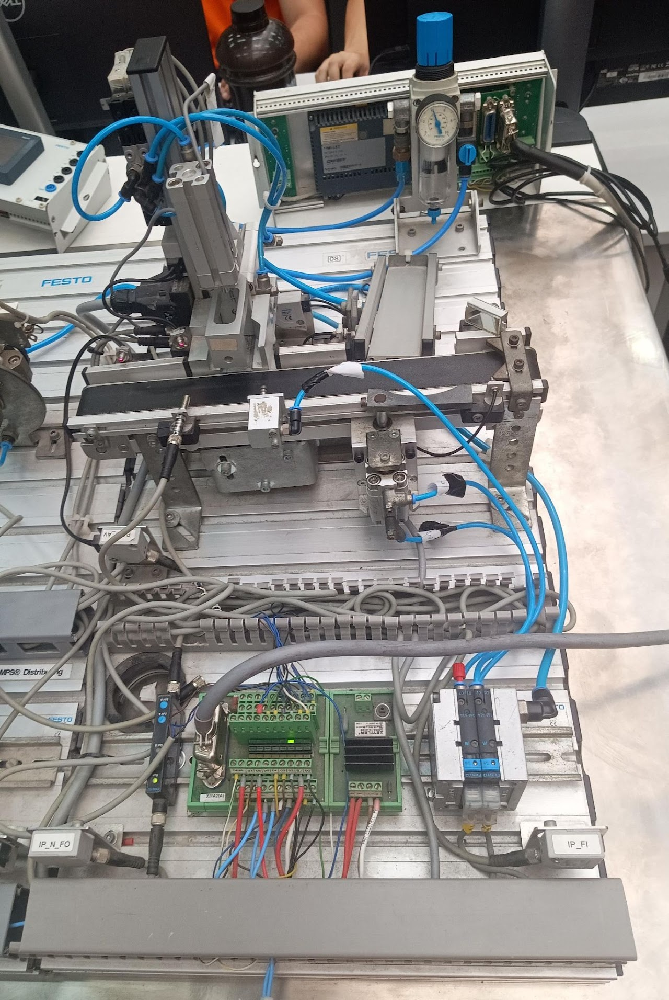

A FESTO 4 é um modelo didático do sistema MPS (Modular Production System), desenvolvido para simular processos industriais automatizados.
Esse sistema é amplamente utilizado em ambientes educacionais como escolas técnicas, laboratórios e universidades, permitindo o aprendizado prático de conceitos de automação industrial.
Por meio de sua estrutura modular, é possível estudar e aplicar tecnologias como pneumática, eletropneumática, sensores industriais e controle lógico.
O principal objetivo do sistema é reproduzir uma linha de produção automatizada, possibilitando a análise de processos, identificação de peças e controle de atuadores.